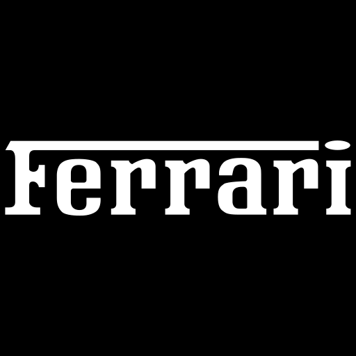

Projects

Netflix Clone
The Netflix clone project serves as a learning exercise in front-end web development, allowing for the practice of HTML, CSS, and basic JavaScript skills. It demonstrates proficiency in creating visually appealing and responsive web pages while understanding design principles and user experience considerations.

Car Dealership
This HTML project features a responsive navbar with links, showcasing luxury cars in a grid layout. Each car tile includes an image that switches on hover, using JavaScript to cycle through multiple images. Pagination links allow navigation between showroom pages. The page aims to engage users with interactive car displays and streamlined navigation.
Netflix Clone
The Netflix clone project serves as a learning exercise in front-end web development, allowing for the practice of HTML, CSS, and basic JavaScript skills. It demonstrates proficiency in creating visually appealing and responsive web pages while understanding design principles and user experience considerations.